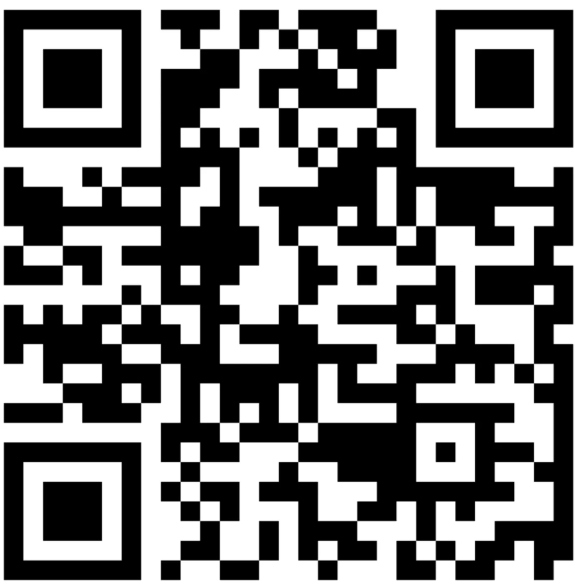

Infraestructura
Capital Humano e Infraestructura
El CIMAT cuenta con un equipo de excelencia y una infraestructura tecnológica de vanguardia distribuida en 5 sedes a lo largo de la República Mexicana, lo que le permite generar y transferir conocimiento de forma eficiente y con impacto nacional.
Supercómputo: 2 clústeres, uno en Guanajuato con 2,288 cores y otro en Puerto Interior, Silao con 1,642 cores, más de 200 servidores distribuidos entre todas sus sedes.
Investigación
Áreas y Líneas de Investigación
El CIMAT genera conocimiento científico de frontera a través de la investigación en sus cuatro grandes áreas de especialidad, buscando contribuir al desarrollo científico y tecnológico de México mediante la colaboración multidisciplinaria y la transferencia del conocimiento.
Matemáticas Básicas
- Algebraica y Análisis
- Ecuaciones Diferenciales Parciales
- Geometría Diferencial
- Sistemas Dinámicos y Topología
Ciencias de la Computación
- Aprendizaje Máquina y PLN
- Ingeniería del Software
- Cómputo Paralelo y Optimización
- Procesamiento de Señales
- Imágenes y Visión Computacional
- Robótica y Sistemas Inteligentes
Probabilidad y Estadística
- Estadística Aplicada e Inferencia
- Modelación Estocástica
- Teoría de la Probabilidad
Matemáticas Aplicadas
- Análisis Numérico
- Cómputo Científico
- Biomatemáticas y Análisis Aplicado
- Problemas Inversos
- Cuantificación de Incertidumbre
- Economía Matemática

Vinculación
Vinculación: Soluciones para los Sectores Productivos
El CIMAT ofrece servicios tecnológicos especializados que acompañan a organizaciones públicas y privadas desde la identificación del problema hasta la implementación y seguimiento de la solución, integrando equipos altamente calificados y herramientas de vanguardia.
Ciencia de Datos
- Explotación y analítica de datos predictivos y prescriptivos
- Procesamiento y depuración de datos
- Consultoría en estrategias de analítica
- Despliegue y visualización de datos
Cómputo Científico
- Inteligencia artificial y modelación computacional
- Visión computacional
- Programación en paralelo y supercómputo
Matemáticas y Estadística
- Modelación estadística y pronósticos
- Logística de suministros y optimización de procesos
- Construcción y diseño de indicadores
- Modelos georeferenciados y simulación


Contacto
Información de Contacto
Te invitamos a conocer más sobre el CIMAT, sus programas de investigación, formación, vinculación y divulgación. Nuestro equipo está disponible para atender tus consultas y explorar oportunidades de colaboración que contribuyan al fortalecimiento de capacidades y a la solución de problemáticas específicas en tu organización.
Dra. Ma. Antonieta Zuloaga GarmendiaCoordinadora de Servicios TecnológicosCorreo: cst@cimat.mx

Síguenos y visítanos